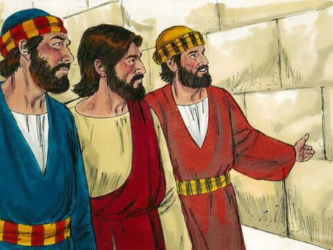
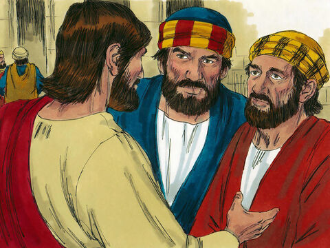
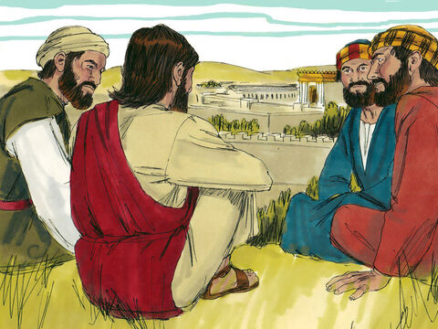
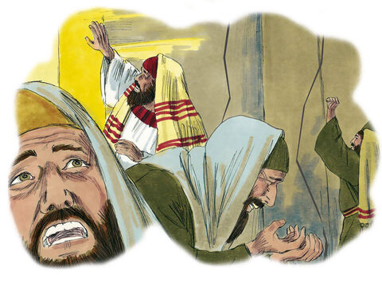
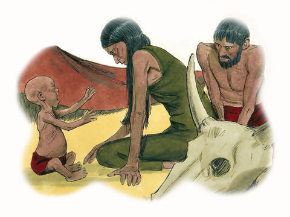
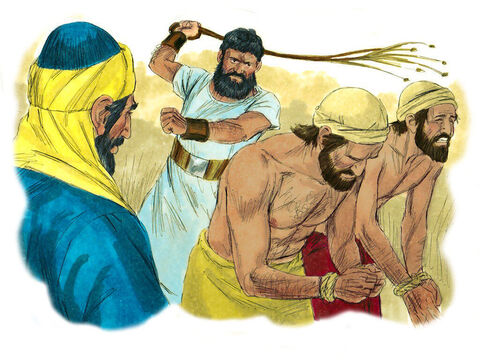
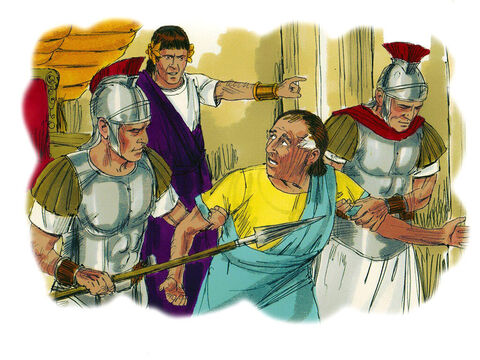

Signs Of The End Of The Age
And Jesus went out, and departed from the temple: and his disciples came to him for to shew him the buildings of the temple.
And Jesus said unto them, See ye not all these things? verily I say unto you, There shall not be left here one stone upon another, that shall not be thrown down.
And as he sat upon the mount of Olives, the disciples came unto him privately, saying, Tell us, when shall these things be? and what shall be the sign of thy coming, and of the end of the world?
And Jesus answered and said unto them, Take heed that no man deceive you.
For many shall come in my name, saying, I am Christ; and shall deceive many.
And ye shall hear of wars and rumours of wars: see that ye be not troubled: for all these things must come to pass, but the end is not yet.
For nation shall rise against nation, and kingdom against kingdom: and there shall be famines, and pestilences, and earthquakes, in divers places.
All these are the beginning of sorrows.
Then shall they deliver you up to be afflicted, and shall kill you: and ye shall be hated of all nations for my name's sake.
And then shall many be offended, and shall betray one another, and shall hate one another.
And many false prophets shall rise, and shall deceive many.
And because iniquity shall abound, the love of many shall wax cold.
But he that shall endure unto the end, the same shall be saved.
And this gospel of the kingdom shall be preached in all the world for a witness unto all nations; and then shall the end come.
Matthew 24:1-14
- 
- 
- 
- 
- 
- 
- 